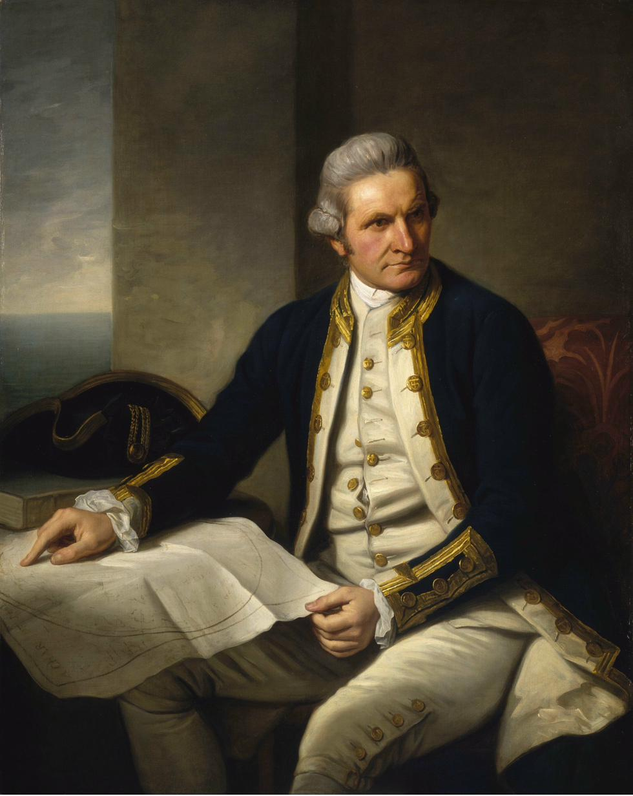
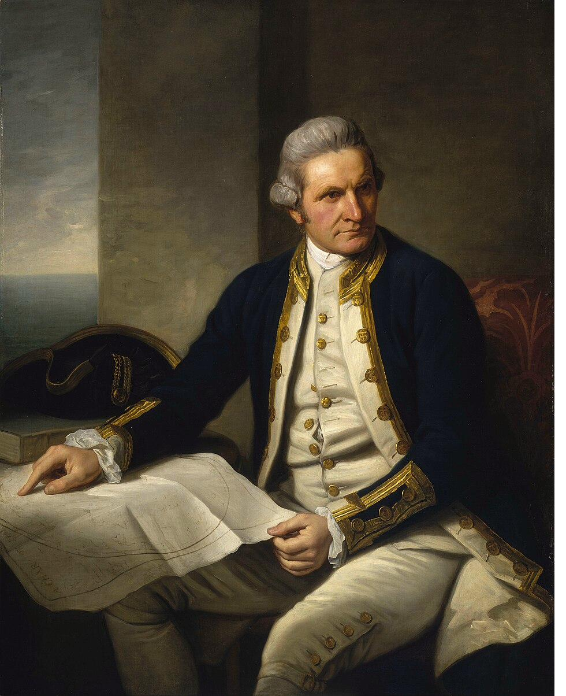
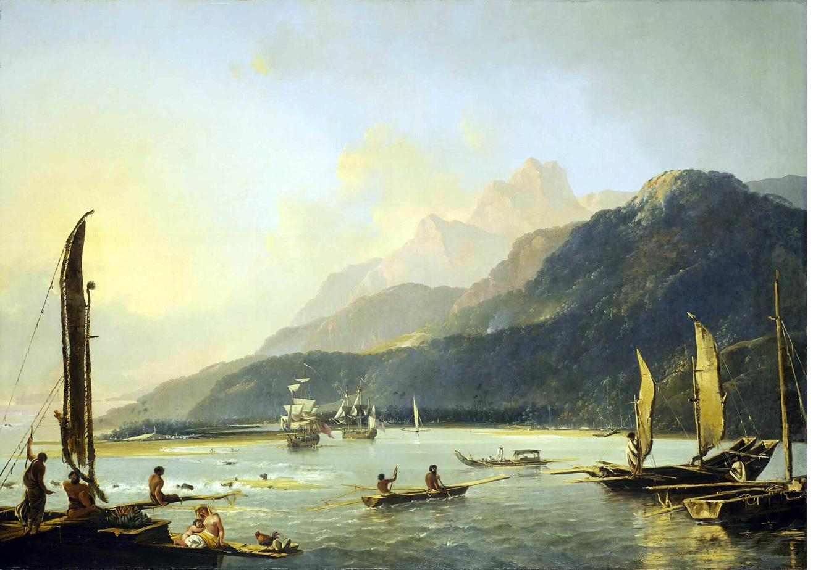
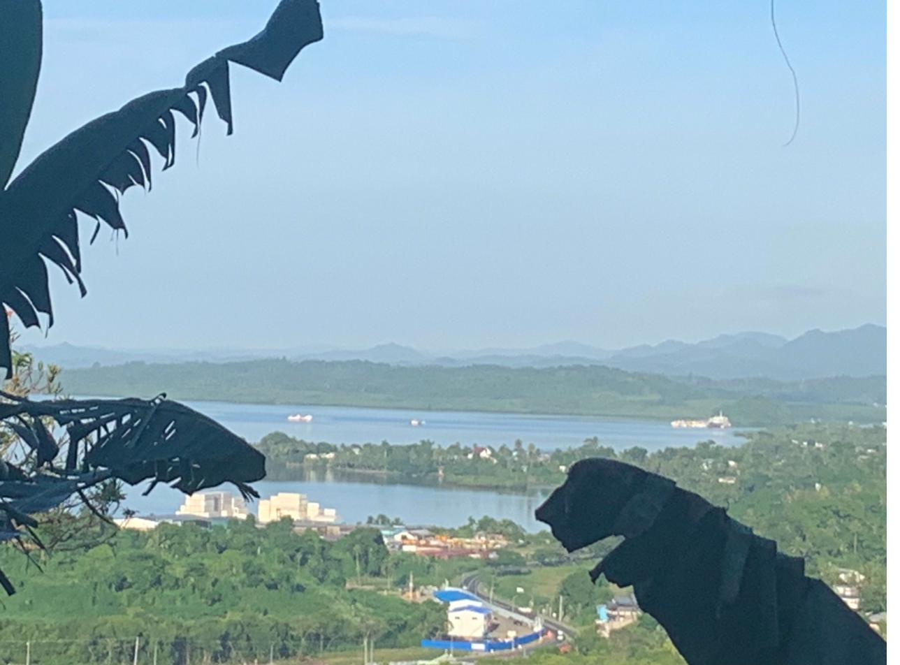

When Captain Cook meets Claude AI
In early 2026, Phil Reevell spent three months in Fiji. He had been interested in the voyages of Captain James Cook since childhood — Cook was born in Marton, in what is now Middlesbrough, close to where Phil grew up, and the Cleveland Hills and the North Yorkshire coast that shaped Cook's early life were familiar territory. Being in the Pacific, in a country Cook had skirted without landing, seemed like the moment to do something with that interest.
The project began with Cook's own journals — the three-voyage edition edited by J.C. Beaglehole, still the definitive primary source — and with Peter Moore's Endeavour: the ship and the attitude that changed the world, which Phil had read before leaving for Fiji. The Fiji Museum in Suva, and the archipelago itself, provided the present-tense counterpart: what the Pacific looks like from inside it, two and a half centuries after the Resolution passed through.
The result is Cook in the Pacific: Then and Now — nine episodes across three voyages, each episode moving between Cook's account and the world his voyages helped to make.
This is not a biography of Cook, though the first voyage follows his early life closely. It is an attempt to understand what the voyages actually did — to the Pacific, to the peoples Cook encountered, and to the way the world was subsequently organised. The Then and Now framing is literal: each episode holds Cook's own words alongside the present, asking what remains, what has changed, and what the distance between the two tells us.
The series is structured as three acts, one per voyage. The first three episodes — covering the Endeavour voyage of 1768 to 1771 — are the opening act. Episodes four to six follow the Resolution on the second voyage, which pushed further south than any ship had gone and returned through what is now Fiji. Episodes seven to nine cover the third voyage and its aftermath: Hawaii, 1779, and the world the voyages made possible.
Primary research drew on Beaglehole's four-volume edition of the journals, his biography of Cook, and Anne Salmond's account of the first and second voyages. Phil interviewed Peter Moore, whose book on the Endeavour remains the most readable single-volume account of the first voyage.
AI research tools — specifically, Claude — were used to navigate the secondary literature and cross-reference the journals against the geography Phil was moving through in Fiji. The AI does not write the scripts or generate the editorial judgements, but it made it possible for one person working independently to hold a large and complex body of material in view simultaneously.
Working alone in Fiji, without the production infrastructure of a broadcast commission — no researcher, no studio, no cast — meant finding other ways to fill gaps in the process. AI was an experiment in whether those gaps could be filled without compromising the work. The answer, on balance, is yes, with caveats. Here is what was done and why.
The central question behind this project is a simple one: what did Cook see that I might also see, standing in the same waters two and a half centuries later? Answering it visually required reconstructing scenes that no photograph can provide. The approach was to use AI image generation prompted directly from Cook's journal descriptions, combined with photographs taken in Fiji during the residency.


Cook's appearance is known primarily through the Dance portrait and a handful of others made late in his life. Written descriptions from those who served with him add detail — his height, his manner, the quality of his attention. The AI image used in the series draws on both, attempting to get closer to the man rather than simply reproducing a familiar painting.

The Hodges painting above shows the Resolution entering Matavai Bay from the perspective of those already there — canoes in the foreground, the ship a presence in the middle distance. That view from the land, imagining Cook's arrival as seen by the people he was arriving among, is at the heart of the series. AI generation made it possible to construct versions of this perspective for places Hodges never painted.

Photographs taken in Fiji during the residency provided the present-tense ground. The hills behind Suva harbour, the quality of the light on the water, the scale of a ship against the Pacific horizon — these are things Cook also saw, or versions of them. Integrating the photographic and the AI-generated produced the composite images used in the series, where the distance between then and now is visible in the image itself.
Cook's voice in the series — used for readings from the journals — is AI-generated from written descriptions of how he spoke and presented himself. In a broadcast production this would be an actor; working independently, AI voice generation is the practical equivalent. The narration and interview material are Phil's own voice throughout. The AI voice is used only for historical source material.
The opening sequence on the Episode 1 page — the Endeavour arriving in Pacific waters — is AI-generated from prompts drawing on journal descriptions of first sightings of land and the physical appearance of the ship. No film of the Endeavour exists. AI generation is one way of closing that gap, imperfectly but usefully.
None of this replaces judgement, editorial decision-making, or the primary research in the journals. It extends what one person can do alone, in the field, with limited resources. That is what it is for.
Cook in the Pacific is an independent project — not a BBC commission, not made for broadcast. That is a deliberate choice rather than a default. Phil Reevell has made long-form audio journalism for the BBC and independently for many years; this series sits alongside that work, not instead of it.
The difference is that a commission shapes a project around what a broadcaster needs. This series was shaped around what the subject needed. Nine episodes across three voyages, with companion maps, annotated journal extracts, and AI-generated visual material, is not a format that fits easily into a broadcast schedule. Made independently, it can be what it wants to be.
The series is free to listen to. If you want to support independent audio journalism of this kind, the best thing you can do is tell someone else about it — or, if you would like to contribute directly to production costs, you can do so at Ko-fi. A link will be added here once the page is set up.
Each episode has a shownotes page with chapter marks, sources, and context. The maps section has interactive charts of all three voyages, with journal extracts at the relevant locations. The Vatoa account — a close reading of the four journal lines in which Cook sighted what is now Fijian territory without landing — is available as a standalone document.
More companion material will be added as the series progresses.